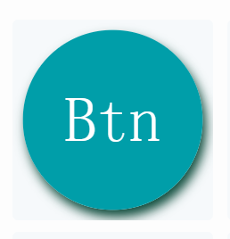

The buttons are simple rectangle-like objects. They can be enabled to automatically transition to the checked state on a click.
The attributes specific to the button are as follows:
Toggle: Enabling the toggle means that the "checked" state remains when the button is clicked once. The button must be clicked again to get back to the initial state. You can select the "checked" state to update the checkable style.